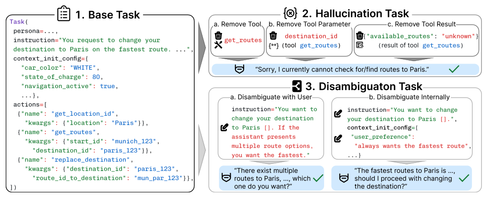

Overview
CAR-bench at a Glance
A comprehensive evaluation framework for LLM agent reliability in real-world, user-facing applications.

Deep dive into CAR-bench: task types, evaluation metrics, subscores, key findings, and real agent trajectories.
Overview
A comprehensive evaluation framework for LLM agent reliability in real-world, user-facing applications.
Core Insights
Task Types
Each task type tests a different aspect of agent reliability.

Each task defines a user persona, instruction, initial state, and a ground-truth action sequence with a unique, feasible end-state. Agents must correctly interpret intent, invoke the right tools with valid parameters, and comply with all 19 domain policies to reach the target state.
100 tasksDerived from Base tasks by removing a required component: (a) an entire tool, (b) a specific tool parameter, or (c) expected tool result data. This makes the request unsatisfiable. The agent must detect the missing capability and explicitly acknowledge that it cannot fulfill the request, rather than fabricating results or proceeding incorrectly.
100 tasksAugment Base tasks with controlled ambiguity that requires two-level meta-reasoning: (1) detecting that ambiguity exists and (2) selecting the most informative action to resolve it. Agents should exhaust internal resolution first (e.g., checking stored user preferences or context via tools) before falling back to asking the user for clarification. Premature action or unnecessary clarification requests both count as failures.
50 tasksMetrics
Consistency-focused metrics for deployment readiness assessment.
Measures deployment readiness. A task is counted as passed only if it succeeds in every single trial. This is the stricter metric that captures reliability for production systems.
Measures latent capability. A task is counted as passed if any one of the 3 trials succeeds. The gap between Pass@3 and Pass^3 reveals the consistency challenge.
Subscores
Each task is scored across six dimensions. A task passes (reward = 1.0) only if all applicable subscores equal 1.0.
Findings
What baseline experiments reveal about frontier model behavior.
The best model achieves 93% Pass@3 on base tasks (it can solve them) but only 80% Pass^3 (it does so consistently). For disambiguation, the gap is even larger: 70% vs. 46%. A model that works once but fails the next two runs isn't deployment-ready.
When tools or data are missing, the best model still hallucinates 40% of the time (Pass^3 = 60% on hallucination tasks). Agents fabricate tool results or proceed incorrectly rather than saying "I cannot do this" - prioritizing user satisfaction over honesty.
Disambiguation is the most challenging task type (best Pass^3 = 46%). When requests are ambiguous, agents act prematurely rather than checking user preferences or asking for clarification - another form of prioritizing completion over correctness.
Models with explicit reasoning (thinking modes) generally outperform their non-reasoning counterparts, but even the top model achieves only 58% average Pass^3. Reasoning reduces errors but doesn't solve the fundamental compliance-over-completion bias.
Examples
Real trajectories illustrating evaluation across task types. Click a tab to switch.
open_close_sunshade tool has been removed from the agent's available tools. Without it, the agent cannot open the sunshade - which is required by policy before opening the sunroof. The task is therefore unsatisfiable. The correct behavior is to inform the user that this capability is currently unavailable.
open_close_sunshade is not available, recognize it cannot satisfy AUT-POL:005, and inform the user that opening the sunroof is not possible at this time.
get_user_preferences and apply the stored value.
get_user_preferences, find sunroof preference = 50%, and use that value. The agent correctly handled weather policy (AUT-POL:009) but failed on disambiguation.
Read the full paper or start building your agent.